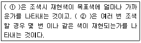
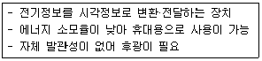
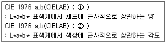

컬러리스트산업기사 (2010-05-09 기출문제)
1과목: 색채심리
1. 디자인에서 두 가지 이상의 색을 조화되도록 사용하는 것은?
- 배열
- 배색
- 대조
- 대비
(정답률: 알수없음)

2. 일반적으로 국기에 사용되는 색상이 상징하는 의미가 잘못 연결된 것은?
- 빨강-혁명, 유혈, 용기
- 파랑-경백, 순결, 평등
- 노랑-광물, 금, 비옥
- 검정-주권, 대지, 근면
(정답률: 알수없음)
3. 2색 이상의 배색을 되풀이하여 일정한 질서에 따른 조화를 주는 방법으로 통일감과 융화성을 높여주는 배색 효과는?
- Accent
- Repetition
- Gradation
- Separation
(정답률: 알수없음)
4. 다음 배색의 효과에 관한 설명 중 옳은 것은?
- 선명한 색의 배색은 동적인 이미지를 준다.
- 차분한 색의 배색은 동적인 이미지를 준다.
- 색상의 대비가 강한 배색은 정적인 이미지를 준다.
- 유사한 색상끼리의 배색은 동적인 이미지를 준다.
(정답률: 알수없음)
5. 청각과 색채에 관한 내용 중 틀린 것은?
- 음파가 귀에 자극될 때에는 소리를 들을 뿐 아니라 색채까지도 느끼는 수가 있다.
- 낮은 음은 어두운 색으로 표시할 수 있다.
- 예리한 음은 중간 밝기의 낮은 채도의 색으로 표현할 수 있다.
- 높은 음은 고명도, 고채도의 색으로 표시할 수 있다.
(정답률: 알수없음)
6. 사과라는 대상의 색채를 무의식적으로 추론하여 빨간색이락 한다. 이처럼 대상의표면색에 대한 무의식적 추론에 의해 결정되는 색채를 무엇이라고 하는가?
- 기억색
- 색채 항상성
- 착시
- 색채 주관성
(정답률: 알수없음)
7. 다음 중 위험을 알리는 신호로 적색을 많이 활용하는 가장 큰 이유는?
- 채도가 높아 유쾌한 감을 준다.
- 자극이 강해서 시선을 상쾌한 느낌을 준다.
- 원시적인 정열감이 주의를 높인다.
- 채도가 높아 유목성이 높다.
(정답률: 알수없음)
8. 햇빛이 차단된 계단이나 복도에는 어떤 색을 쓰는 것이 조명의 효율을 높이는 데 가장 효과적인가?
- 노랑 계통의 밝은 색
- 연두 계통의 밝은 색
- 난색 계통의 채도가 높은 색
- 한색 계통의 채도가 높은 색
(정답률: 알수없음)
9. 땅의 색을 기반으로 지역색을 연구한 프랑스의 색채 연구가는?
- 비렌 (Raber Biren)
- 랑크로 (Jean-Philippe Lenclos)
- 먼셀 (Albert H. Munsell)
- 오스트발트 (Ostwald)
(정답률: 알수없음)
10. 다음 배색 중에서 주조색과 보조색이 유사색 배색이고, 여기에 강한 액센트를 주기 위해서 주조색과 대조되는 색으로 강조색을 사용한 것은?
- 노란색 상의에 베이지색 하의를 입고 짙은 파란색 벨트를 작용하였다.
- 회색 벽지에 천연 나무색 바닥재를 깔고 검정색 가구를 배치하였다.
- 어두운 빨간색 상의에 어두운 파란색 하의를 입고 선명한 노란색 벨트를 착용하였다.
- 엷은 하늘색 벽지에 밝은 노란색 바닥재를 깔고 천연 나무색 가구를 배치하였다.
(정답률: 알수없음)
11. 색채선호의 원리에 대한 설명으로 옳은 것은?
- 제품의 선호색은 고정되어 유행에 따라 변화하지 않는다.
- 세계적으로 공통된 선호색의 1위는 빨간색이다.
- 일반적으로 선호경향과 제품특징에 대한 선호색은 고정되어 있지 않다.
- 남성과 여성의 선호색은 비슷한 편이다.
(정답률: 알수없음)
12. 노란색이나 레몬색을 보면 과일냄새를 느끼는 색의 감각효과는?
- 공감각
- 시감각
- 상징성
- 연상성
(정답률: 알수없음)
13. 정밀한 작업이 이뤄지고 주위의 산만함을 피해야 하는 곳에 사용하기에 적합한 색은?
- 2.5 YR 6/4
- 5 PB 7/6
- 5 G 8/2
- 2.5 RP 9/4
(정답률: 알수없음)
14. 방사능 사용 지역임을 알리기 위해 표시를 곳곳에 해두었다. 이 표시에 사용된 색채의 역할은?
- 안전색채
- 방위색채
- 색채배색
- 색채치료
(정답률: 알수없음)
15. 국기가 3가지 색으로 구성되어 있지 않은 나라는?
- 독일
- 덴마크
- 알제리
- 이탈리아
(정답률: 알수없음)
16. 마케팅의 핵심 개념에 해당하지 않는 것은?
- 욕구
- 시장
- 제품
- 지위
(정답률: 알수없음)
17. 색채의 배색 효과에 있어서 가장 중후하고 클래식한 느낌을 갖는 색채배색은?
- pale tone - vivid tone 의 배색
- deep tone - dark tone 의 배색
- light grayish tone - dull tone 의 배색
- dull tone - light tone의 배색
(정답률: 알수없음)
18. 부정적 연상으로 절망, 죄, 죽음의 의미를 가지고 있으나 현대의 산업제품에는 세련된 색의 대표로 많이 활용되는 것은?
- 흰색
- 회색
- 보라
- 검정
(정답률: 알수없음)
19. 다음 중 색채의 상징과 가장 거리가 먼 것은?
- 신분
- 방위
- 숫자
- 지역
(정답률: 알수없음)
20. 다음 중 육각형의 형태가 연상되는 색채와 관련이 있는 것은?
- 위험, 혁명
- 희망, 명랑
- 안정, 평화
- 냉정, 심원
(정답률: 알수없음)
2과목: 색채디자인
21. 다음 중 슈퍼그래픽의 기능과 거리가 먼 것은?
- 지표물의 기능
- 공간조절의 기능
- 실용적 기능
- 소비의 기능
(정답률: 알수없음)
22. 19세기 미술공예운동(Art and Craft movement)이 일어나게 된 근본 원인은?
- 미술과 공예작품의 가격이 급격하게 하락되었기 때문
- 기계로 생산된 제품의 질이 현저하게 낮아졌기 때문
- 미술작품과 공예작품을 구별하기 위해
- 미술가와 공예가의 사회적 위상을 제고시키기 위해
(정답률: 알수없음)
23. 윌림엄 모리스가 모리스 상회를 설립하여 디자인에 접목시키고자 했던 양식은?
- 바로크
- 로마네스크
- 고딕
- 로코코
(정답률: 알수없음)
24. 색채 관리(color management)의 구성 요소와 그 내용이 잘못 연결된 것은?
- 색채 계획화(planning) : 목표, 방향, 절차 설정
- 색채 조직화(organizing) : 직무 명확, 적재적소적량 배치, 인간관계 배려
- 색채 조정화(coordination) : 이견과 대립 조정, 업무분담, 팀워크 유지
- 색채 통제화(controlling) : 의사소통, 경영참여, 인센티브 부여
(정답률: 알수없음)
25. 다음 중 디자인의 어원이 아닌 것은?
- dessein
- disegno
- designare
- desire
(정답률: 알수없음)
26. 다음 중 디자인의 개념으로 가장 적합한 것은?
- 유행에 따른 미를 추구하는 것
- 미적, 독창적 가치를 추구하는 것
- 경제적, 실용적 가치를 추구하는 것
- 미적, 실용적 가치를 계획하고 표현하는 것
(정답률: 알수없음)
27. 마케팅의 가장 기초가 되는 인간욕구체계 중 메슬로우(Maslow) 이론에 기초해서 가장 상위에 속하는 것은?
- 생리적 욕구
- 안전에 대한 욕구
- 사회적 욕구
- 자아실현 욕구
(정답률: 알수없음)
28. 19세기 말에서 20세기 초에 일어났던 양식운동으로서 자연물의 유기적 형태를 빌려 건축의 외관이나 가구, 조명, 실내장식, 회화, 포스터 등을 장식 할 때 사용 되었던 양식은?
- 아르누보
- 미술 공예운동
- 데 스틸
- 모더니즘
(정답률: 알수없음)
29. 디자인의 심미성에 대한 설명으로 옳은 것은?
- 디자이너의 주관적 판단에 의해 결정되어야 한다.
- 기능적인 디자인에는 심미성이 결여될 수 밖에 없다.
- 소비대중이 공감할 필요는 없다.
- 사회, 문화적으로 평가가 달라질 수 있다.
(정답률: 알수없음)
30. 다음 색채사용에 관한 내용 중 가장 거리가 먼 것은?
- 육류룰 파는 식육점에서 핑크색광을 사용하는 것은 육류를 신선하게 보이게 하기 위함이다.
- 사무실에서 온회색을 주조색으로 사용하는 것은 중립적인 분위기를 줄 수 줄 수 있어 업무를 보는데 안정적이다.
- 병원 수술실의 녹색은 혈액과 보색관계로 의사가 수술 할 때에 작업의 집중효과를 높여준다.
- 공장에서 기계류에 검은색을 사용하는 것은 눈의 피로를 감소시켜 주기 때문이다.
(정답률: 알수없음)
31. 디자인 선진국들의 디자인 경향에 대한 연결이 잘못된 것은?
- 독일 - 과학으로서의 디자인
- 이탈리아 - 예술로서의 디자인
- 미국 - 전통으로서의 디자인
- 스칸디나비아 반도 - 공예로서의 디자인
(정답률: 알수없음)
32. 테마공원, 버스 정류장 들에 도시민의 편의와 휴식을 위해 만들어진 시설물의 명칭은?
- 로드사인
- 인테리어
- 익스테리어
- 스트리트 퍼니처
(정답률: 90%)
33. 그리스어인 흐르다(rheo)에서 나온 말이며, 유사한 요소가 반복, 배열됨으로서 시각적 인상이 강화되는 미적 형식 원리는?
- 리듬
- 균형
- 강조
- 조화
(정답률: 알수없음)
34. 다음 유행색에 대한 설명 중 틀린 것은?
- 어떤 계절이나 일정기간 동안 특별히 많은 사람에 의해 입혀지고, 선호도가 높은 색이다.
- 유행 예측 색으로ㅗ 색채전문기관들에 의해 유행할 것으로 예측하는 색이다.
- 패션산업에서는 실 시즌의 약 2년 전에 유행예측 색이 제안되고 있다.
- 1992년 설립된 한국유행색산업협회가 있지만 국제 유행색 협회와는 무관하게 국내활동에 국한되어 있다.
(정답률: 알수없음)
35. 마케팅의 핵심개념과 순환고리가 옳게 배열된 것은?
- 욕구→필요→제품→거래→시장
- 욕구→수요→시장→제품→필요
- 욕구→거래→제품→수요→필요
- 욕구→제품→시장→수요→필요
(정답률: 알수없음)
36. 다음 중 컴퓨터그래픽에 대한 설명으로 틀린 것은?
- 다양한 색채표현 및 교체가 쉽다.
- 이미지의 복사 및 확대, 축소, 회전 등 변화가 쉽다.
- 여러 각도에서 hs 그림을 나타낼 수 없다.
- 다양한 그림의 기억, 수정, 재사용이 용이하다.
(정답률: 알수없음)
37. 다음 중 환경디자인을 설명한 내용 중 틀린 것은?
- 도시계획이란 건축물이나 구조물 사이에 생겨나는 공간을 이상적으로 사용할 수 있도록 계획, 검토하고 보행자와 자동차의 통행에 지장을 줄 우려가 없는 건물계획 또는 도로계획을 연구한다.
- 도시디자인에서 거리 시설물들은 기능, 편리, 심미적 측면을 고려해서 디자인되어야 하는데 그 기준은 견고성, 접근성, 호환성, 안락성 등이 있다.
- 건축은 효과적인 사용을 위하여 공간을 둘러싸는 예술이며 거주성이 높은 내부공간 구성과 외부 공간에 구성미가 전체적으로 조화를 이룰 때 예술적 가치가 발휘된다.
- 편의성과 심미성에 치중되었던 종래의 환경디자인 개념은 자원을 절약하고 재사용이 가능한 에콜로지컬 디자인의 개념으로 변화하고 있다.
(정답률: 알수없음)
38. 상품을 선전하고 판매하기 위해 판매현장에서 사용되는 디자인 형태는?
- POP 디자인
- 픽토그래피 디자인
- 에디토리얼 디자인
- DM 디자인
(정답률: 알수없음)
39. 색채계획 및 디자인 프로세스에서 계획된 색채로 착색한 모형이나 시뮬레이션을 통해 의뢰인과 검토하는 과정은?
- 디자이닝
- 실시계획
- 모델링
- 에디팅
(정답률: 알수없음)
40. 색채마케팅에 관한 설명 중 가장 옳은 것은?
- 색을 과학적, 심리적으로 이용하여 구매를 유도하는 기업 경영전략이다.
- 제품 판매를 위한 판매전략이므로 CIP는 색채마케팅이라고 할 수 없다.
- 색채 마케팅은 궁극적으로 경쟁제품의 가격을 낮추는 효과를 낸다.
- 심미적인 역할을 강조하는 것이므로 품질 향상 효과와는 관련이 없다.
(정답률: 64%)
3과목: 섹채관리
41. CCM(Computer Color Matching)을 도입하는 목적과 장점이 아닌 것은?
- 일정한 품질을 생산할 수 이TEk.
- 컬러런트 구성이 gydbf적이다.
- 메타머리즘 예측이 가능하다.
- 숙련자만이 관리할 수 있다.
(정답률: 알수없음)
42. 다음 중 색료에 대한 분류로서 옳은 것은?
- 탄소가 포함된 색료는 유기색료, 포함되지 않은 색료는 무기 색료이다.
- 염료는 플라스틱이나 페인트의 착색에, 안료는 직물이나 피혁 등의 착색에 쓰인다.
- 산화철, 목탁, 산화망간 등은 무기염료이다.
- 인디고는 가장 오래된 천연안료이고, 모베인은 최초의 인공안료이다.
(정답률: 알수없음)
43. 다음 중 광원의 색 특성이 나타내는 것은?
- 색온도와 연색성
- 색좌표와 조도
- 복사강도와 방향성
- 색채도와 확산성
(정답률: 알수없음)
44. 웹 안전색은 몇 개의 색으로 구성되어 있는가?
- 128색
- 216색
- 256색
- 1600색
(정답률: 알수없음)
45. 다음 중 원시인이 사용한 무기안료가 아닌 것은?
- 모베인
- 산화철
- 산화망간
- 목탄
(정답률: 알수없음)
46. 다음 중 L*a*b*색표계에서 가장 밝고 붉은 색은?
- L* = 0, a* = 0, b* = 0
- L* = +10, a* = 0, b* = +10
- L* = +10, a* = +10, b* = 0
- L* = -10, a* = -10, b* = -10
(정답률: 알수없음)
47. 디바이스 종속적 색체계의 문제점에 대한 설명으로 틀린 것은?
- 디지털 색채를 다루는 전자 장비들 간에 호환성이 없다.
- 동일한 제조회사에서 생산하는 컬러 디바이스는 동일한 색체계를 유지한다.
- 디바이스 종속정 색체계에는 RGB, HLS 색체계등이 있다.
- 입출력 전자 장비간의 색채가 일치하지 않는다.
(정답률: 알수없음)
48. 육안검색 시 유의사항 중 틀린 것은?
- 높은 채도에서 낮은 채도의 순서로 검사한다.
- 비교하는 색은 동일 평면으로 배열 되도록 배치한다.
- 관찰자는 연령이 젊어야 좋다.
- 표면색 비교에 이용된다.
(정답률: 알수없음)
49. 색 제시 조건이나 조명조건 등의 차이에 따라 변화를 보이는 주간적인 색의 변화는?
- 컬러 케스트
- 컬러 어피어런스
- 컬러 세퍼레이션
- 컬러 프로파일
(정답률: 알수없음)
50. 물체의 색을 측정하는 방법으로서 CIE가 추천한 것이 아닌 것은?
- 45/0
- 0/45
- d/45
- d/0
(정답률: 알수없음)
51. 측색기의 기준설정을 위하여 측색작업에서 반드시 필요한 것은?
- 백색표준판
- 시료 뒤에 대야 할 회색판
- 기준광 감소용 필터
- 파장교정용 필터
(정답률: 알수없음)
52. 균일한 색면을 디지털 카메라로 촬영하여 R=160, G=120, B=89의 결과를 얻었다. 이 측정값에 대하여 옳게 설명한 것은?
- 이 색채값은 해당 카메라의 색채체계에서만 의미를 갖는다.
- 이값은 CMYK 값으로 환산하여 컬러프린터 출력하면 정확하게 색채의 재현이 가능하다.
- 다른 디지털 카메라로 촬영하더라도 조명상태만 동일하다면 똑같은 색채값을 얻게 된다.
- 이 측정값은 모든 RGB체계에 같은 색으로 적용된다.
(정답률: 알수없음)
53. 분말 상태로 물에 쉽게 용해되고 혼색이 자유로워 손쉽게 사용할 수 있지만 세탁이나 햇빛에 약한 단점이 있는 염료는?
- 염기성 염료
- 반응성 염료
- 직접염료
- 산성 염료
(정답률: 알수없음)
54. ( ) 안에 들어갈 알맞은 말은?

- ① 정확성,② 정밀성
- ① 정밀성,② 정확성
- ① 정량성,② 정밀성
- ① 정밀성,② 정량성
(정답률: 알수없음)
55. 측색기상에 표현되는 혼색계 체계로 대표되는 것중 가장 정확성이 우수한 것은?
- XYZ
- L*a*b*
- L*u*v*
- spectrum data
(정답률: 알수없음)
56. 다음은 어떤 장치에 대한 설명인가?

- CRT
- LCD
- LAB
- CCD
(정답률: 알수없음)
57. 모니터의 검은색 조정 방법에서 무전압 영역과 비교하기 위한 프로그램의 RGB 수치가 올바르게 표기된 것은?
- R=0, G=0, B=0
- R=100, G=100, B=100
- R=255, G=255, B=255
- R=256, G=256, B=256
(정답률: 알수없음)
58. 색채측정의 표준을 개발하여 추천한 국제기구는?
- 국제조명위원회(CIE : Commission Internationale del' Eclairage)
- 국제표준기구(ISO : International Standards)
- 미국표준국(NBS : National Bureau of Standards)
- TV방송규격심의회(NTSC : National Television System Committee)
(정답률: 알수없음)
59. 한국산업표준에서 정한 다음 용어 ①과 ②는 무엇을 뜻하는가?

- ① 채도,② 채도각
- ① 채도,② 색상각
- ① 색상,② 색상각
- ① 색상각,② 색각
(정답률: 알수없음)
60. 직물의 염료로 사용되는 식물 색소가 아닌 것은?
- 꼭두서니
- 참마
- 진주
- 억새
(정답률: 알수없음)
4과목: 색채지각의이해
61. 사람이 느낄 수 있는 새벽빛, 낮의 태양 광선, 흰 구름, 먹구름, 저녁노을 등 하늘의 대기 변화는 빛의 어떤 특성과 관련이 있는가?
- 흡수
- 반사
- 산란
- 굴절
(정답률: 알수없음)
62. 가법혼색의 설명으로 틀린 것은?
- 병치혼합, 회전혼합도 일종의 가법혼색이다.
- 빛의 혼합과 같이 빛에 빛을 더하여 얻어지는 원리에 의한 것이다.
- 인상파 화가 쇠라의 점묘법에 의한 그림의 혼색 효과에서 나타나는 혼색방법이다.
- 가법혼색은 혼색할수록 점점 어두운 색이 된다.
(정답률: 알수없음)
63. 다음 색채현상에 대한 설명 중 틀린 것은?
- 색이 밝기를 명도(lightness)라 한다.
- 원색에 무채색을 혼합하게 되면 색의 순도가 달라지는데 이를 채도(saturation)가 변했다고 한다.
- 인간은 이론적으로 다양한 강도와 채도를 가진 약 200가지의 색을 변별할 수 있다.
- 유사한 색끼리를 근접하여 배열하게 되면 원을 그리게 되는데, 이를 색상환이라고 한다.
(정답률: 알수없음)
64. 물리학적으로 색을 의미하는 것은?
- 가시광선
- 적외선
- 물체
- 색소
(정답률: 알수없음)
65. 추상체는 다음 중 어떤 파장의 빛에 가장 민감한가?
- 360nm
- 460nm
- 560nm
- 660nm
(정답률: 알수없음)
66. 다음 중 간상체와 추상체에 대한 설명이 틀린 것은?
- 눈의 망막 중 중심와에는 간상체와 추상체가 존재한다.
- 간상체는 추상체에 비하여 해상도가 떨어지지만 빛에는 더 민감하다.
- 추상체는 색채 시각과 관련된 광수용기이다.
- 간상체와 추상체는 스펙트럼 민감도가 다르다.
(정답률: 알수없음)
67. 주목성에 대한 설명 중 잘못된 것은?
- 주로 위험표지나 공사장 표시 등에 쓰인다.
- 파스텔 톤의 색은 명도가 높으므로 주목성이 높다.
- 색자체가 주목성이 높더라도 배경색에 따라 눈에 띄지 않을 수도 있다.
- 일반적으로 난색이 한색보다 주목성이 높다.
(정답률: 알수없음)
68. 여러 대비 현상 중 인간의 감각이 가장 민감하게 반응하는 것은?
- 색상대비
- 명도대비
- 채도대비
- 면적대비
(정답률: 알수없음)
69. 빨간색의 사과에 파란색의 조명을 비춰주면 사과는 어떤 색으로 보이는가?
- 빨간색
- 초록색
- 파란색
- 검정색
(정답률: 알수없음)
70. 명도대비, 색상대비, 채도대비와 같이 대비효과가 순간적으로 일어나며, 주위색의 영향으로 인접색과 서로 반대되는 경향을 보이면서 색차가 클수록 대비현상이 강해지는 것은?
- 계시대비
- 계속대비
- 동시대비
- 동화 효과
(정답률: 알수없음)
71. 중간혼합에 대한 설명으로 잘못된 것은?
- 점묘파 화가 쇠라의 작품은 병치혼합의 방법이 활용된 것이다.
- 병치혼합은 일종의 가법혼색이다.
- 회전혼합은 직물이나 컬러인쇄에 활용되고 있다.
- 회전혼합은 색을 칠한 팽이에서 찾아볼 수 있다.
(정답률: 알수없음)
72. 다음 중 몸집이 작아 보이기 위해 어떠한 색의 옷을 선택 하는 것이 좋을까?
- 저채도의 난색
- 저채도의 한색
- 고명도의 난색
- 고명도의 한색
(정답률: 알수없음)
73. 다음 감법혼합 중 틀린것은?
- 마젠타+노랑 = 빨강
- 파랑+빨강 = 주황
- 시안+마젠타 = 파랑
- 노랑+시안+마젠타 = 검정
(정답률: 알수없음)
74. 다음 중 심리적으로 가장 큰 흥분감을 유도하는 색에 대한설명으로 옳은 것은?
- 단파장의 영역에 속한다.
- 자외선의 영역에 속한다.
- 장파장의 영역에 속한다.
- 적외선의 영역에 속한다.
(정답률: 알수없음)
75. 색의 대비현상에 대한 내용으로 틀린 것은?
- 동일한 색이라도 면적이 커지면 더욱 밝고 선명하게 보이는 현상을 면적대비라고 한다.
- 명도가 다른 두 색이 있을 때 밝은 색은 더 밝게, 어두운 색은 더 어둡게 보이는 현상을 명도대비라 한다.
- 서로 보색관계인 두 색이 있을 때 서로의 영향으로 본래의 색보다 채도가 낮아 보이는 현상을 보색 대비라고 한다.
- 두 색이 붙어있을 때 그 경계부분에서 나타나는 대비 현상이 먼 곳보다 더욱 강하게 일어나는 것을 연변 대비라고 한다.
(정답률: 59%)
76. 탁한 유채색이 무채색 바탕위에 높였을 때 더욱 맑은 색으로 보이는 것과 관련이 있는 대비는?
- 채도대비
- 명도대비
- 색상대비
- 계시대비
(정답률: 알수없음)
77. 다음 중 팽창색과 수축색에 대한 설명으로 틀린것은?
- 따뜻한 색은 외부로 확산하려는 팽창색이다.
- 명도가 높은 색은 내부로 위축되려는 수축색이다.
- 차가운 색은 내부로 위축되려는 수축색이다.
- 색채가 실제의 면적보다 작게 느껴질 때 수축색이다.
(정답률: 알수없음)
78. 눈으로 들어오는 빛의 양을 조절하는 기능을 가진 부분은?
- 각막
- 수정체
- 수양액
- 홍채
(정답률: 알수없음)
79. 다음 중 빛에 대한 학설에 대한 설명이 옳은 것은?
- 빛이 파동이라는 추론은 플라톤이 전개하였다.
- 호이겐스는 빛의 광양자설을 전개하였다.
- 맥스웰은 빛의 입자설을 전개하였다.
- 뉴턴은 빛의 미립자설을 전개하였다.
(정답률: 알수없음)
80. 강한 자극을 받으면 자극이 사라진 뒤에도 망막의 흥분 상태가 그대로 지속되면서 본래의 자극광과 동일한 밝기와 색을 그대로 느끼는 현상은?
- 양성잔상
- 음성잔상
- 운동잔상
- 엠베르트 잔상
(정답률: 알수없음)
5과목: 색채체계의이해
81. 다음의 색채조화 원리 중 잘못된 설명은?
- 색채조화는 두색 이상의 배색에 있어서 애매하지 않은 명료한 배색에서만 얻을 수 있다.
- 배색된 색채들이 서로 공통되는 상태와 속성을 가질 때 그 색채군은 조화된다.
- 배색된 색채들의 상태와 속성이 서로 반대되면서도 모호한 점이 없을 때 조화된다.
- 가장 가까운 색채끼리의 배색은 보는 사람에게 강렬한 이미지를 주며 대비효과를 크게 느끼게 한다.
(정답률: 알수없음)
82. 색채를 표기하는 방법 중 톤(tone)을 옳게 설명한 것은?
- 무채색 계열에서 밝고 어두움을 구분하는 방법에 해당하는 것이다.
- 명도와 채도를 포함하는 복합개념으로 색상과는 관계하지 않는다.
- 미국은 ISCC-NIST 색명법을 이용하여 PCCS란톤 분류법을 만들었다.
- 가장 채도가 높은 색상들 사이에도 밝고 어둠이 구별되고 있으며 이들의 명도 차이를 톤(tone)이라 한다.
(정답률: 0%)
83. CIE 표색계의 설명으로 틀린 것은?
- 표준광원에서 표준관찰자에 읳 관찰되는 색을 정량화시켜 수치로 만드는 것이다.
- 1931년 국제조명회(CIE)는 XYZ 표색계를 발표하였다.
- Y값은 황색의 자극치로 명도값을 나타내고, X는 적색, Z는 청색의 자극치에 일치한다.
- 많이 사용되는 L*a*b* 색표계는 색오차와 근소한 색차이를 표현하기 위해 변환된 색공간이다.
(정답률: 알수없음)
84. DIN 색채체계에 대한 설명으로 틀린 것은?
- 색상, 명도, 채도의 순을 표기한다.
- 오스트발트 표색계와 비슷하다.
- 명도 표기는 D(Dunkelstufe)로 한다.
- 채도는 S로 표기하며 0~15까지의 수로 표현된다.
(정답률: 알수없음)
85. 먼셀 시스템에서 명도의 기준이 5일때 최고 채도 값이 가장 낮은 색상은?
- 5R
- 5Y
- 5G
- 5RP
(정답률: 알수없음)
86. 다음 중 한국산업표준(KS) 유채색의 수식 형용사와 영문표기가 옳은 것은?
- 초록빛(greenish)
- 빛나는(brilliant)
- 부드러운(soft)
- 탁한(dull)
(정답률: 알수없음)
87. 색의 표준화를 위해 제시한 색채체계와 그 기본색 구성, 국가의 연결이 바른 것은?
- 먼셀표색계 - 노랑, 남색 빨강, 청록 - 미국
- 오스트발트표색계 - R, Y, G, B, P - 독일
- NCS표색계 - Y, R, B, G, W, S - 스웨덴
- JIS표색계 - R, Y, B - 일본
(정답률: 70%)
88. 오스트발트(W. Ostwald)가 제시한 색채조화론의 특성에 속하는 것은?
- 순색, 하양, 검정을 1차 요소로, 명색조, 회색, 암색조를 2차 요소로 한 색삼각형을 활용한다.
- 면적에 의한 배색의 효과가 체계적으로 고려되어 있다.
- 색채조화에 커다란 영향을 미치는 명도를 기초로 한 배색이 자유롭다.
- 색채체계가 가진 조직적인 질서로 인해 배색방법이 명쾌하다.
(정답률: 알수없음)
89. 현색계와 혼색계를 바르게 설명한 것은?
- 현색계는 실제 눈에 보이는 물체색과 투과색 등이다.
- 현색계는 눈으로 00 비교, 검색되지 않고 기계를 이용해야 한다.
- 혼색계는 수치로 구성되어 색의 감각적 느낌이 강하다.
- 혼색계에는 NCS 표색계가 대표적이다.
(정답률: 알수없음)
90. 다음 중 한국산업표준의 기본색명끼리 짝지어지지 않은 것은?
- 분홍, 초록, 하양
- 남색, 보라, 자주
- 갈색, 주황, 검정
- 청록, 회색, 홍색
(정답률: 알수없음)
91. “조화는 질서와 같다”라고 정의하고 있는 색채 조화론은?
- 먼셀의 색채 조화론
- 오스트발트의 색채 조화론
- 비렌 색채 조화론
- 문·스펜서의 색채 조화론
(정답률: 알수없음)
92. 다음 중 오색과 오행, 방위, 계절이 바르게 연결된 것은?
- 황-土-서-가을
- 적-金-남-겨울
- 청-木-동-봄
- 흑-水-북-여름
(정답률: 알수없음)
93. 먼셀 색체계 5YR 5/12의 색상과 가장 가까운 NCS 기호는?
- S 1020 - Y50R
- S ⑤85 - Y50R
- S 1020 - YR
- S ⑤85 - YR
(정답률: 알수없음)
94. 오스트발트 색채조화원리 중 등가색환의 조화에 해당하는 것은?
- 등색상 삼각형에서 백색량이 모두 같은 계열의 배색
- 등색상 삼각형에서 흑색량이 모두 같은 계열의 배색
- 등색상 삼각형에서 순색량이 모두 같은 계열의 배색
- 색상은 다르나 백색량, 흑색량이 같은 색의 배색
(정답률: 알수없음)
95. 색채 표준화의 조건으로 옳지 않은 것은?
- 색상, 명도, 채도만을 사용한다.
- 색채간의 지각적 등보성이 있어야 한다.
- 색채 표기가 국제기호에 준해야 한다.
- 실용화가 용이해야 한다.
(정답률: 알수없음)
96. 색채조화의 공통된 원리로서 가장 가까운 색채 끼리의 배색으로 친근감과 조화를 느끼게 하는 조화원리는?
- 동류의 원리
- 질서의 원리
- 명료성의 원리
- 대비의 원리
(정답률: 알수없음)
97. 다음 중 오스트발트 색체계의 1ca 표기와 관련이 있는 것은?
- 연한 빨강
- 연한 노랑
- 진한 빨강
- 진한 노랑
(정답률: 알수없음)
98. 한국산업표준(KS)의 색이름 방법은 다음 중 어느 계통색 방법을 기본으로 하는가?
- Munsell
- DIN
- ISCC-NIST
- Ostwald
(정답률: 알수없음)
99. 다음 중 오스트발트 표색계에 관한 설명 중 틀린 것은?
- 오스트발트 표색계는 흑색량, 백색량, 순색의 혼합 비율에 의해 물체색을 체계화한 것이다.
- B는 모든 빛을 완전하게 흡수하는 이상적인 흑색을 의미한다.
- 어느 한 색상에 포함되는 색은 모두 W+B+C=100이 되는 혼합비에 의해 구성된다.
- W-B, W-C, C-B 각 변은 모두 12단계를 이루며 등색상 삼각형을 형성한다.
(정답률: 알수없음)
100. 먼셀 색입체의 수직단면에 관한 설명으로 틀린 것은?
- 수직단면은 같은 명도의 색이 나타나므로 등명도면 이라고도 한다.
- 축 좌우의 색은 색상환에서 마주보고 있는 보색이다.
- 동일 색상의 명도, 채도의 변화를 한 눈에 볼 수 있다.
- 각 색 단면의 가장 바깥의 색이 순색이다.
(정답률: 알수없음)